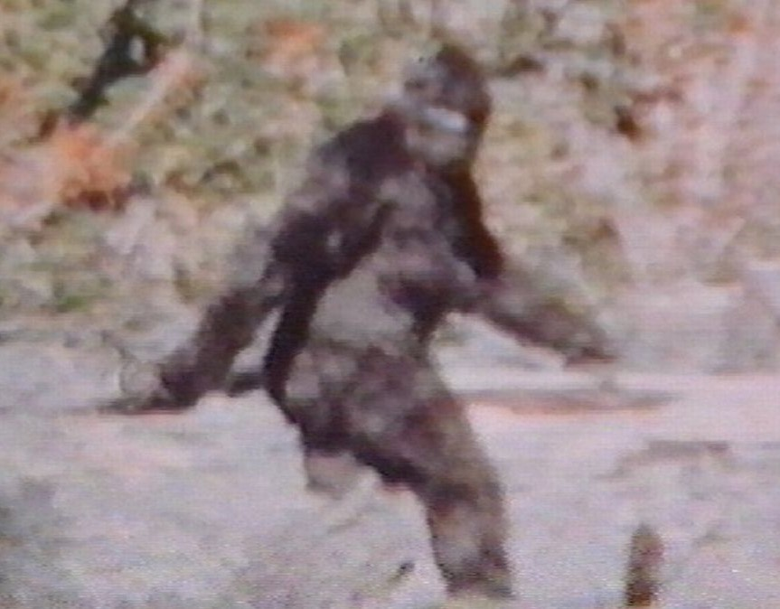
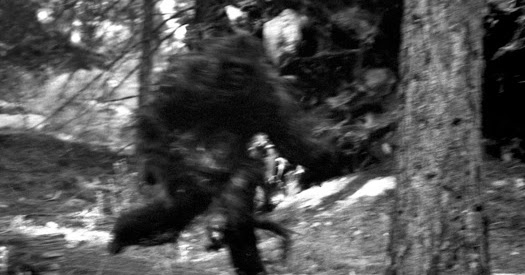

BIGFOOT SURVIVAL GUIDE
this site was brought to you by squarespace use code SQUARE to get 10% off your first website

Bigfoot Key Information
- Strong enough to uproot a giant redwood
- 2x the hieght of an average man
- Cannot be tracked
- Blurry in real life
- Diet:
- Bears
- Buffalo
- Bongo
- Beefalo (medium-rare)
- Bison
- Big horn sheep
- Hibernates for 42% of the year
- Can almost run as fast as a Ford F-150 Raptor
- Can see in the dark
- Hightened senses
Bigfoot Survival Tips
- Don't panic bigfoot can smell fear
- Avoid traveling alone unless equipped with proper tools for self defense such as:
- Shotgun
- Elephant Rifle
- Silver Bullets
- Bear Spray
- Bear Mace
- Actual Mace (medieval)
- AGM 114 Hellfire Air to Ground Missile
- Keep your wits about you as bigfoot prefers to ambush its victims
- Bring a dog as one of bigfoots weaknesses is that it can be smelt from a reasonable distance and using a dog can help with detecting it before it can detect you
- Try to avoid direct combat as you will most likely lose
- Let people know where you've gone to help them find the body
- Lay traps as you do so that if bigfoot sets on off you can gauge how far away it is and escape accordingly
- Use various gadgets such as a flare fun or flashbangs to distract it and enable a fast escape
- Ultimately there is no escape from bigfoot if you gets your scent your days are numbered so enjoy the time you have left as it will be coming for you
